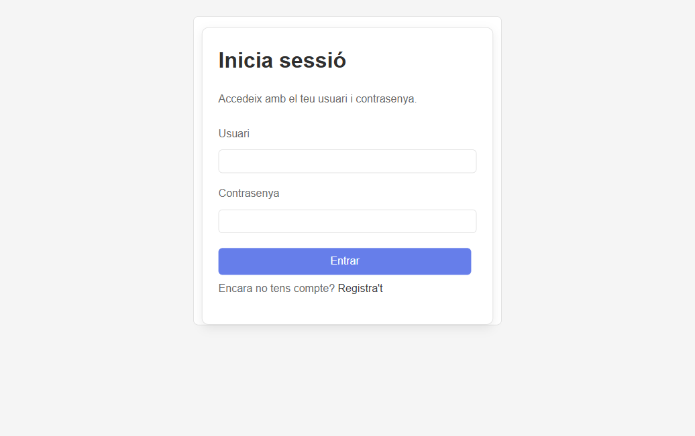

Ruta pública: GET /login · Spring Security gestiona la autenticación

Texto "Inicia sessió" renderizado por Thymeleaf. La ruta GET /login retorna la vista "login".
Input de texto que Spring Security captura. El nombre del campo debe ser "username" (convención SS).
Spring Security intercepta este campo (name="password"). La contraseña se valida contra la BD encriptada con BCrypt.
Dispara POST /login. Spring Security procesa las credenciales y llama a CustomLoginSuccessHandler para redirigir.
Navega al formulario de registro. El POST crea un User con rol CLIENT y contraseña cifrada.
ADMIN → /admin · CLIENT → /client. Lo decide CustomLoginSuccessHandler leyendo el rol del UserDetails.